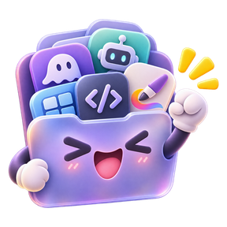

Loading apps…

New Mac? One command, and you're ready to go.
Hand-picked Mac apps, installed straight from each publisher and checksum-verified.
Loading apps…
A hand-picked list of Mac apps. Pick what you want (or start from a pack for your role) and it writes one Terminal command that downloads and installs everything, so a new Mac is ready in minutes.
Being careful with commands from the internet is a good habit, so here's what this one does. It runs a public script you can read first. The script downloads each app straight from its publisher and checks it against the publisher's SHA-256 checksum wherever one is published. Add --dry-run and it only shows what it would do, without installing anything. Still not sure? : this copies your command with a short prompt, ready to paste into ChatGPT, Claude or any assistant, so it can explain the command before you run it.
Versions, download links and checksums come from the Homebrew Cask API and from each publisher's own release page, so every app is fetched from the people who make it. The catalog is rebuilt regularly; the date is at the bottom of the page.
No. The script downloads each app straight from its publisher. Homebrew is optional: apps that have a cask also show a brew install line in their details, and a few things (like some command-line tools) can add Homebrew to your install list for you.
Every file is checked against a SHA-256 checksum before it is installed, and a mismatch stops the install. The checksum comes from the Homebrew Cask API or the publisher's release page. When a publisher doesn't list one, it is computed when the catalog is built and pinned, which catches later tampering or corruption but trusts that first download.
Apps that come as a .pkg (Node.js, Python, Java, Go and a few more) need administrator rights to install, and so does writing to a root-owned folder. Those apps carry an admin tag. Plain drag-and-drop apps install without one.
Yes. Turn on the dry run under the command (or add ) and it only prints what it would download and install.
The page is static: no account, nothing to sign up for. The script talks only to this site, for the catalog, and to each app's publisher, for the download.
Intel and Apple Silicon. Open an app's details to see which chips it runs on and the macOS version it needs, shown on its preview. Apple Silicon-only apps are skipped on an Intel Mac.
Run the same command again any time: apps that are already current are skipped and older ones are updated. To refresh everything you've installed from this list, run
Yes. in the bottom bar gives a short address that restores the same selection, which is handy for a teammate's new Mac. saves a script that also works offline.
Installed apps are normal Mac apps: drag them to the Trash, or use (in the ) to sweep up their leftovers.